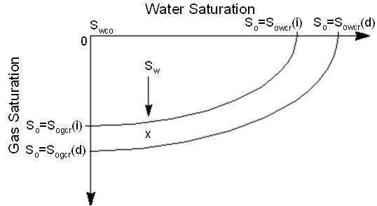

A modified version of Stone’s first three-phase oil relative permeability model ( Stone, 1973 ), summarized in Aziz and Settari (1979) , is available with keyword STONE1 in the PROPS section. The formula is
| [Eq. 141.1] |
where
| is the value of the oil relative permeability in the presence of connate water only |
when
where
when
where
| , and | represent the block averaged values for the oil, water and gas saturations in a grid cell |
| denotes the oil relative permeability for a system with oil, gas and connate water | |
| denotes the oil relative permeability for a system with oil and water only | |
| denotes the oil relative permeability in the presence of connate water only | |
| is the minimum residual oil saturation |
For Stone’s first model, the values of and are looked up as two-phase saturation functions where and . Both two phase oil relative permeability functions are tabulated as functions of oil saturation in the input data either directly if the family (ii) set of keywords is used or indirectly via internal tabular conversion if the family (i) set of keywords is used.
By default is taken to be the minimum of the critical oil-to-water saturation and the critical oil-to-gas saturation, . Alternatively, can be input either as a function of water saturation (SOMWAT keyword) or as a function of gas saturation (SOMGAS keyword).
If the SOMWAT keyword is used, is interpolated from the water saturation as shown in the following figure:
If the SOMGAS keyword is used, is interpolated from the gas saturation as shown in the following figure:
If the hysteresis option is active, the drainage and imbibition values are taken from the SATNUM and IMBNUM tables. For example in the SOMWAT case:

The value (point x in the picture above) is calculated as follows:
| [Eq. 141.2] |
| [Eq. 141.3] |
| [Eq. 141.4] |
| [Eq. 141.5] |
| [Eq. 141.6] |
| is the critical oil-to-water imbibition | |
| is the critical oil-to-water drainage | |
| is the critical oil-to-water actual | |
| is the critical oil-to-gas imbibition | |
| is the critical oil-to-gas drainage | |
| is the critical oil-to-gas actual |
The calculation of three phase oil relative permeability using Stone’s method 1 is enabled by means of the STONE1 keyword in the PROPS section of the input data. Tabulated output of the three phase oil relative permeability values is controlled by the mnemonic SOF in the RPTPROPS keyword.
ECLIPSE 300
If STONEPAR is used, this is obtained as a function of the A and B parameters:
| [Eq. 141.7] |
where:
| [Eq. 141.8] |